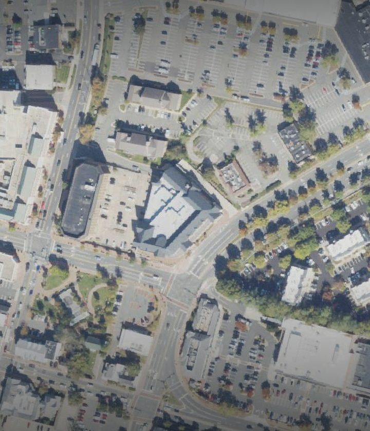
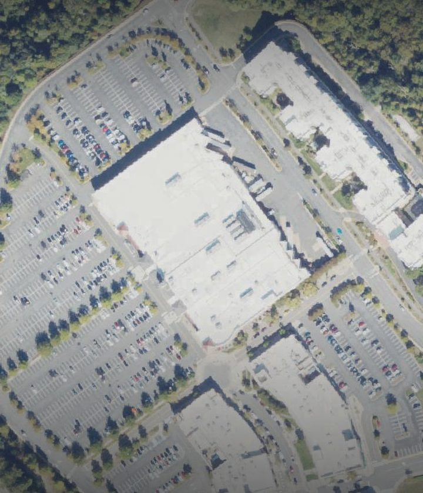
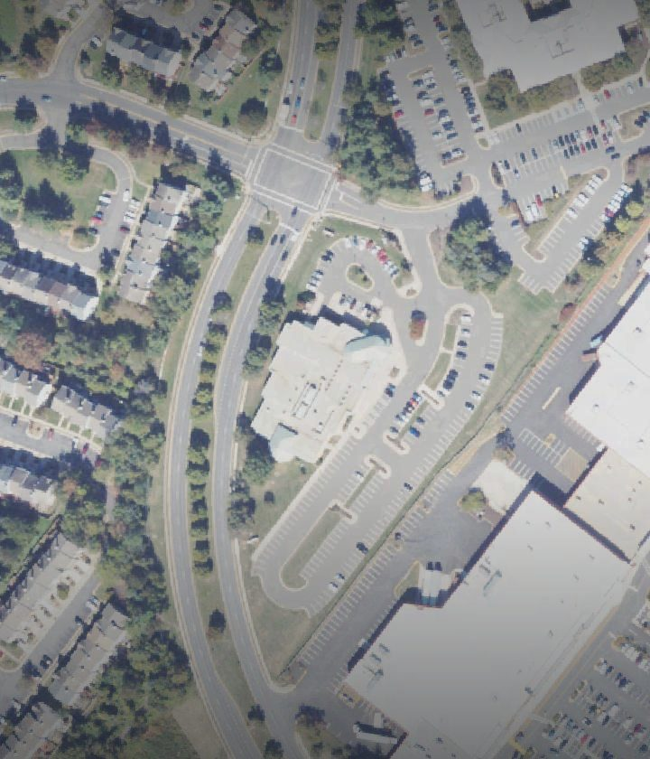
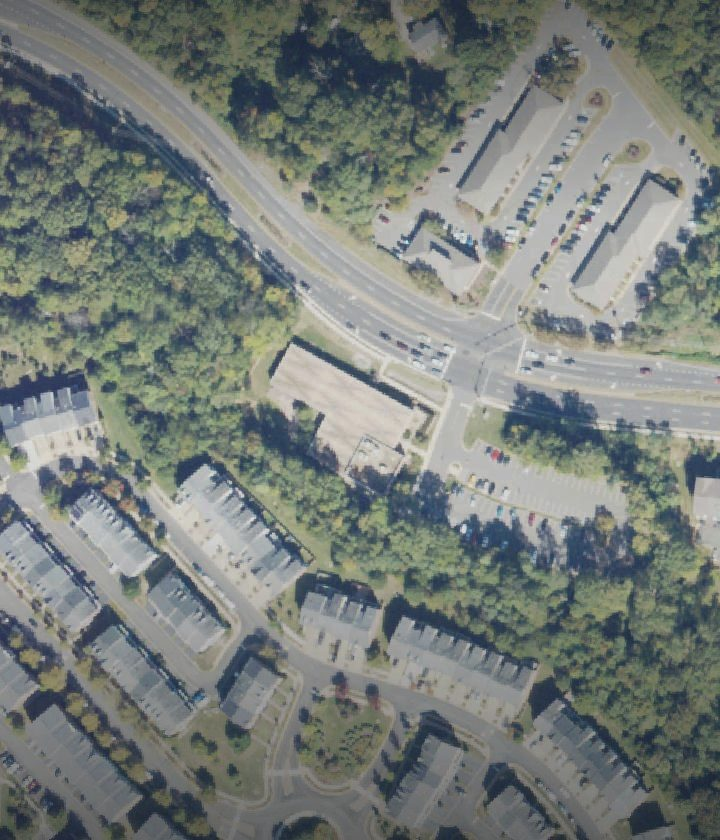
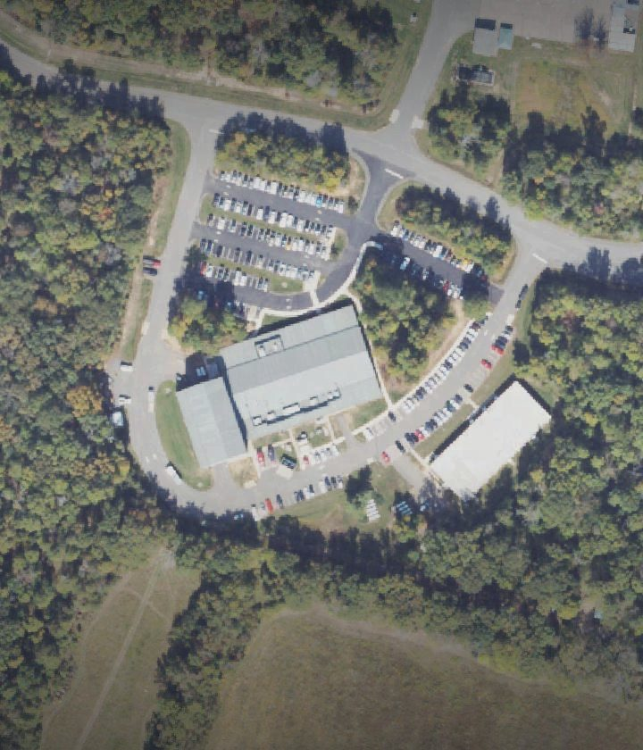

About
What this site is and is not, who built it, and where its numbers come from.
What This Site Is
A Future City Fellowship planning-support prototype. It screens 12 candidate sites for safe, code-responsive public EV charging in Northern Virginia and explains how they compare.
What It Is Not
- Engineering advice
- A permit or code-compliance determination
- A utility capacity confirmation
- An official forecast
- A procurement or construction authorization
Every siting decision remains subject to electrical, ADA, fire/AHJ, stormwater and permitting review by the responsible authorities. No site shown here is approved.
Capacity is unverified
Electrical capacity is an unverified placeholder at all twelve sites: nobody has confirmed the service could support chargers. Data confidence is Low at all 12 sites.
Who Built It
- ProgramFuture City Fellowship
- StagePhase 2 prototype
- Built byAndy Yaro
- InstitutionGeorge Mason University
Study Area
- FairfaxFairfax County Government Center, City of Fairfax Regional Library, Fairfax City Hall or municipal building, Pohick Regional Library4 sites
- Prince William CountyNeabsco-Potomac Commuter Garage, Bull Run Library, Central Library, Chinn Park Regional Library, McCoart Government Center, Potomac Library, Haymarket Gainesville Library, Public Safety Training Center8 sites
Data Provenance
- Canonical contractv1.0.0
- Contract generated2026-07-19
- Site inputs2026-06-24
- Model modemilestone2_v3
- Emissions factorEPA eGRID2023 Rev 2, SRVC, 596.3 lb CO2e/MWh
- Factor accessed2026-07-19, refreshed annually
Ranking Correction
An earlier published version of the results showed legacy_v2 scores, under which FFX002 (City of Fairfax Regional Library) led at 58.8. The canonical model uses fixed anchors rather than scoring sites against each other, and ranks FFX004 (Fairfax County Government Center) first at 53.4, with FFX002 second at 51.8. The correction is recorded rather than made silently.
Earlier result (legacy_v2)
FFX002 first at 58.8
Superseded
Official result (milestone2_v3)
FFX004 first at 53.4
Current
Neither ordering is a feasibility finding: electrical capacity is an unverified placeholder at all twelve sites. The 1.6-point gap between FFX004 and FFX002 is within what modest changes to the weights can reverse. How stable the ranks are.
Image Credits
- Fairfax County Government CenterPhoto: Antony-22, CC BY-SA 4.0, via Wikimedia Commons; cropped and darkened

City of Fairfax Regional LibraryAerial view: USGS The National Map, NAIP Plus orthoimagery (public domain)
Neabsco-Potomac Commuter GarageAerial view: USGS The National Map, NAIP Plus orthoimagery (public domain)
Bull Run LibraryAerial view: USGS The National Map, NAIP Plus orthoimagery (public domain)
Potomac LibraryAerial view: USGS The National Map, NAIP Plus orthoimagery (public domain)
Prince William County Public Safety Training CenterAerial view: USGS The National Map, NAIP Plus orthoimagery (public domain)
Design
- HIG NativeInterface built with HIG Native, an unofficial web interpretation of Apple’s Human Interface Guidelines; not affiliated with or endorsed by Apple.
Previous Version
- Open the Previous Version (opens in a new tab)futurecityfellowship.andyyaro.com